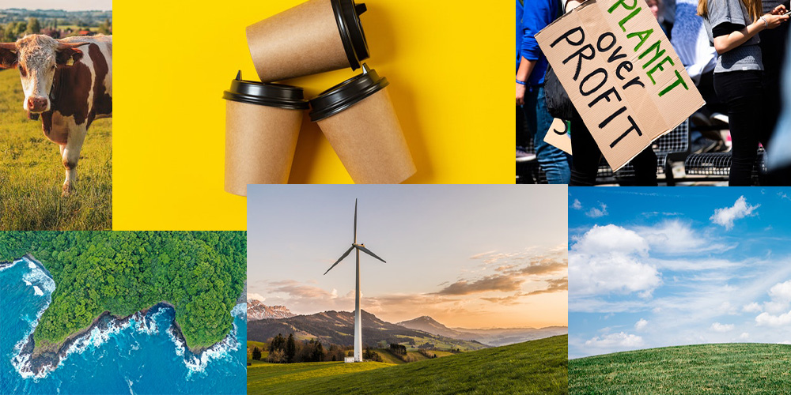

A look into the effects of pollution, single use plastic and the effect it has on animals.
Photo by Nataliya Vaitkevich Photo by Ahmed Haitham
Photo by Kumaraswamy Photo by Catherine Sheila
Photo by Pixabay Photo by Yogendra Singh
Photo by Stijn Dijkstra Photo by Anna Shvets
Photo by Lucas Meneses Photo by Guillaume Falco
A look into the new habits we should integrate into our daily lives; solor energy, using paper storage instead of plastic and striving for clean ocean and land.
Photo by Stas Knop Photo by Pixabay
Photo by Scott Webb Photo by Markus Spiske
Photo by Tobi Photo by Jason Boyd
Ms.Mcquay being interviewd about her thoughts on air and water pollution. Down Below.
-In this interview we get an understanding of the average persons knowledge about pollution. There is a general understanding but there's always room to learn more.
Mrs.Spence being interviewd about the things she does to help the pollution issue. Down Below.
-In this interview we try to come to an understanding of how we as human contribute to pollution and the ways we can fix it. There is an acknowledgement, knowing we can do better as indivisuals when it comes to our impact on pollution.